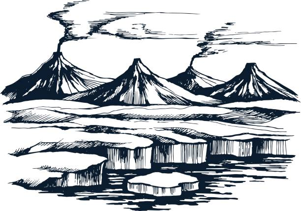

Lidenbrock's house in Hamburg, Germany. They are finding where is the entrance of the center of the earth.
Iceland:

Icelandic alchemist Arne Saknussemm, who claims to have discovered a passage to the centre of the Earth via Snæfell in Iceland.
Jökull of Snæfell :
They believe the entrance to the center of the earth in under this volcano.
Lake in the center of the earth :
It is the beautiful lake that they found in the center of the earth. There are giant creatures and even dinosours. However, when they fond they have to go to the other side of the lake, they experienced some really horrible things.
Tunnel in the center of the earth :
They are walking and crawling in the tunnel. There are lots of dangerous in the tunnel.